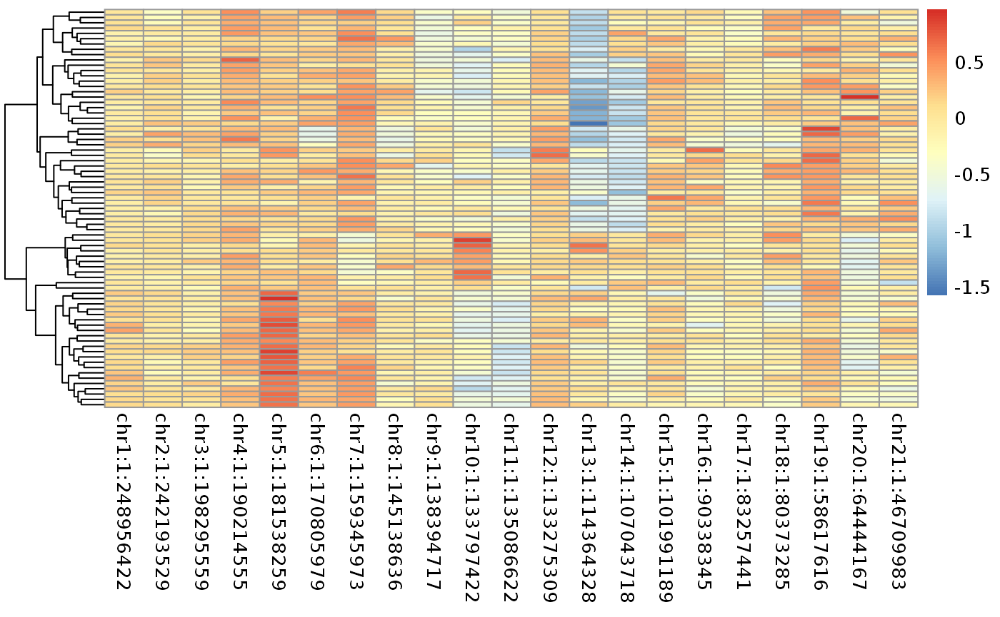
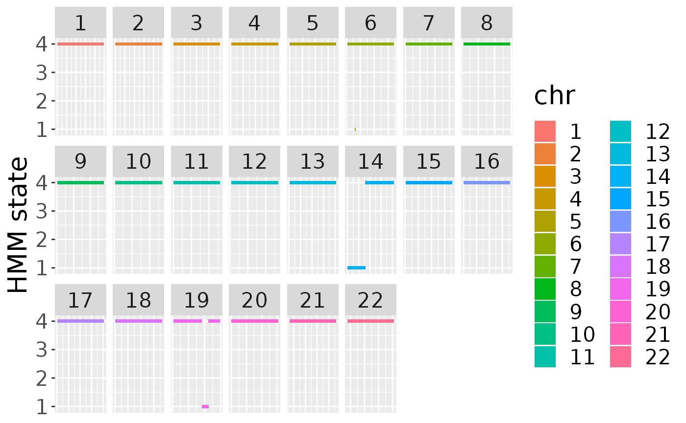
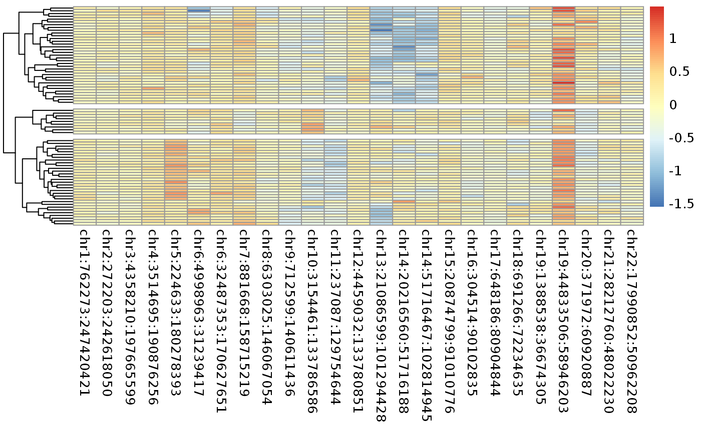
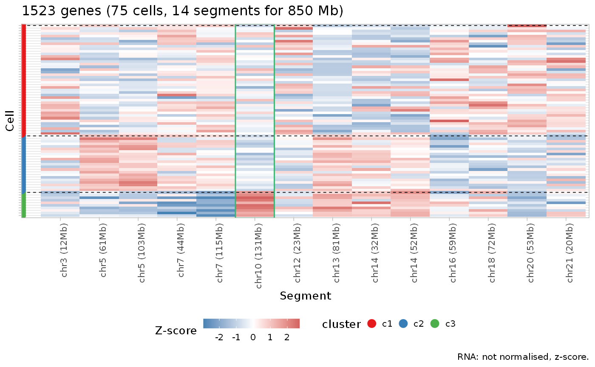
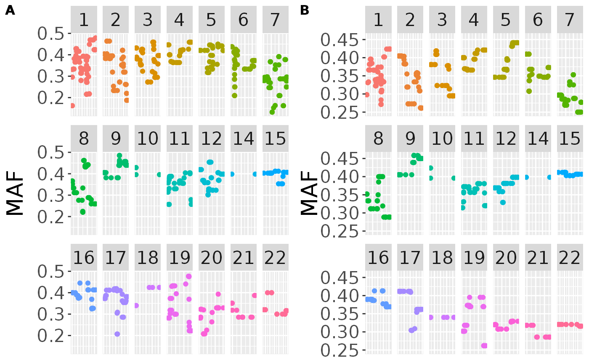
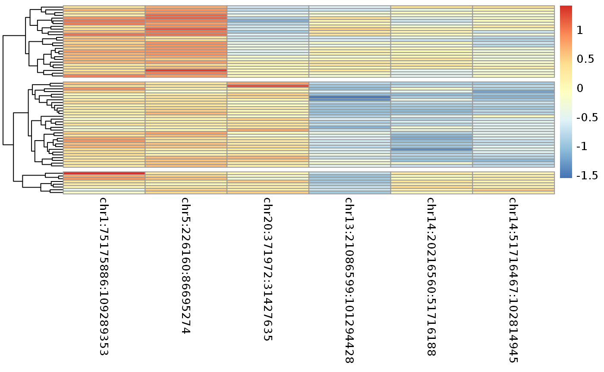
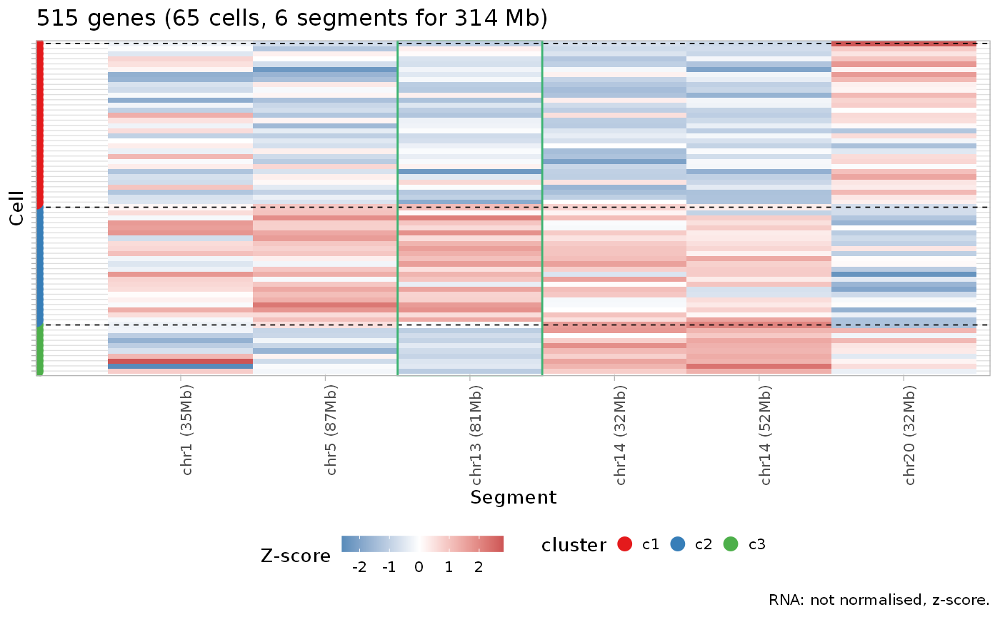

vignettes/gbm_example.Rmd
gbm_example.Rmd#> Loading Rcongas
#> ✓ Loading Rcongas, 'Copy-Number genotyping from single cells'. Support : <https://militeee.github.io/Rcongas/>Here we present the analysis of a glioblastome smart-seq dataset from (Patel et al. 2014). Count and allele frequencies matrices have been obtained from (Fan et al. 2018) and assembled in a set of .RData files.
We can first start by loading the data and trying to aggregate our gene counts over entire chromosomes. Even if the segmentation is not exactly precise, we can already note different potential subclonal CNV.
library(Rcongas)
library(dplyr)
#>
#> Attaching package: 'dplyr'
#> The following objects are masked from 'package:stats':
#>
#> filter, lag
#> The following objects are masked from 'package:base':
#>
#> intersect, setdiff, setequal, union
load("glioblastoma_TPM.rda")
data("hg38_karyo")
chr_cnv <- data.frame(chr = names(hg38_karyo), start = rep(1,length(hg38_karyo)), end = hg38_karyo, tot = rep(2, length(hg38_karyo)))
express <- get_data(glioblastoma_TPM, cnv_data = chr_cnv, type = "fixed_binning", fun = mean)
#> Loading required package: biomaRt
pheatmap::pheatmap(express$data$counts, cluster_cols = F, show_rownames = F)
Some interesting chromosomes are the 9,14 and maybe 13. Now let’s segment the genome.
library(ggpubr)
#> Loading required package: ggplot2
load("AF.rda")
# Basically we just convert the A and B allele information in major and minor
cov_tr <- 20
good_sites <- which(AF_info$coverage > cov_tr)
MAF <- AF_info$minor[good_sites] / AF_info$coverage[good_sites]
MAF_l <- MAF %>% dplyr::as_tibble(rownames = "pos") %>% tidyr::separate(pos, c("chr", "start"))
# perform segmentation
res <- segment_genome(MAF_l, steps = 200L, param_list = list('t'=1e-8), filter_size = 25)
segs_df <- Rcongas:::from_inference_to_segments(res, MAF_l)
# to be honest I would not trust anything that is not an LOH from the output as the data is super variable
segs_df$tot[segs_df$tot == 5] <- 4
segs_df$tot[segs_df$tot == 3] <- 4
segs_df$tot[segs_df$tot == 6] <- 4
# collapse adjacent segments with the same CN value
segs_df_corr <- Rcongas:::simplify_segs(segs_df)
ggpubr::ggarrange(list(plot_MAF(MAF_l, k = 1), plot_MAF(MAF_l, k = 5))
, align = "hv", legend = "none", font.label = list(size = 12), labels = c("A", "B"))
# if you want you can also plot the hmm segments
plot_HMM(segs_df_corr)
After that we can again aggregate counts over our new segmentation and have a look at the heatmap.
segs_df_corr$chr <- paste0("chr", segs_df_corr$chr)
# aggregate pver the chromosome
binned_express <- get_data(glioblastoma_TPM, cnv_data = segs_df_corr, type = "fixed_binning", correct_bins = F, fun = mean, bindim = median, genome = "hg19")
# set a fake ploidy prior, it is needed
binned_express$data$cnv$ploidy_real <- rep(1,nrow(binned_express$data$cnv))
binned_express <- filter_segments.rcongas(binned_express, filter_mu = 50)
#> [1] TRUE TRUE TRUE TRUE TRUE TRUE FALSE TRUE TRUE TRUE TRUE TRUE
#> [13] TRUE TRUE TRUE TRUE TRUE TRUE TRUE TRUE TRUE TRUE FALSE TRUE
#> [25] TRUE TRUE TRUE
# let's take note of our putative LOH
LOH <- grep(binned_express$data$cnv$segment_id, pattern = "chr1[0|3|4]:", value = T, perl = T)
pheatmap::pheatmap(binned_express$data$counts, cluster_cols = F, show_rownames = F, cluster_rows = T, cutree_rows = 3)
Prior to performing the inference with SVI, we select just the more variable features, as high number of segments to cells ratio could led to an excessive clusters penalization.
set.seed(3)
torch <- reticulate::import("torch")
# set priors on the mixing proportions
mix_prior <- list(NULL, torch$tensor(c(0.8,0.2)), torch$tensor(c(0.4,0.3,0.3)), torch$tensor(c(0.3,0.3,0.2,0.2)))
# we filter the lessa variable segments
filt <- apply(binned_express$data$counts,2,sd)
binned_express_most_var <- binned_express[, filt > quantile(filt, 0.70)]
# run inference
subclones <- best_cluster(X = binned_express_most_var, clusters = 1:4, model = "MixtureGaussianNorm", steps =800L, lr = 0.01, param_list = list(a = 0, b = 1, init_sd = 0.5), method = "AIC", mixture = mix_prior, posteriors = T, step_post = 200) CONGAS is able to identify 3 different clusters. We can clearly see how one of them can actually be a cluster of normal cells, as it lacks all our putative LOH regions.
#plot the results
subclones$inference$models[[subclones$inference$model_selection$best_K]]$parameters$norm_factor <- rep(1,75)
#subclones$data <- binned_express$data
plot_counts_rna_segments(subclones, z_score = T, normalised = F)
#> ✓ Loading CNAqc, 'Copy Number Alteration quality check'. Support : <https://caravagn.github.io/CNAqc/>
We can use this knoledge to filter the data and redo the segmentation just on tumor cells (which would be an ideal setting for our HMM).
# we now remove the normal cells and recalculate the major and minor allele proportions
load("MGH31_SNPs_per_cell.rda")
all_cells <- names(get_cluster_assignments(subclones))
normal_cells <- all_cells[get_cluster_assignments(subclones) == "c3"]
tumor_cells <- all_cells[get_cluster_assignments(subclones) != "c3"]
ref_normal <- rowSums(MGH31_SNPs_per_cell$ref[,normal_cells])
alt_normal <- rowSums(MGH31_SNPs_per_cell$alt[,normal_cells])
min_normal <- pmin(ref_normal, alt_normal)
maj_normal <- pmax(ref_normal, alt_normal)
cov_normal <- ref_normal + alt_normal
ref_tumor <- rowSums(MGH31_SNPs_per_cell$ref[,tumor_cells])
alt_tumor <- rowSums(MGH31_SNPs_per_cell$alt[,tumor_cells])
min_tumor <- pmin(ref_tumor, alt_tumor)
maj_tumor <- pmax(ref_tumor, alt_tumor)
cov_tumor <- ref_tumor + alt_tumor
filter <- which(cov_normal > 30)
MAF_normal <- min_normal[filter] / cov_normal[filter]
MAF_tumor <- min_tumor[filter] / cov_tumor[filter]
# basically the same thing as before but with just tumor cells
cov_tr <- 40
good_sites <- which(cov_tumor > cov_tr)
MAF <- min_tumor[good_sites] / cov_tumor[good_sites]
MAF <- MAF[MAF > 0.10]
MAF <- MAF[grep(names(MAF), pattern = "chr1[0|4|3]:",invert = T)]
MAF_l <- MAF %>% dplyr::as_tibble(rownames = "pos") %>% tidyr::separate(pos, c("chr", "start"))
res <- segment_genome(MAF_l, steps = 200L, param_list = list('t' =1e-8), filter_size = 33)
segs_df <- from_inference_to_segments(res, MAF_l)
segs_df$tot[segs_df$tot == 6] <- 2
segs_df$tot[segs_df$tot == 5] <- 4
segs_df_corr2 <- simplify_segs(segs_df)
ggpubr::ggarrange(plot_MAF(MAF_l, k = 5), plot_MAF(MAF_l, k = 11), align = "hv", common.legend = T, labels = c("A", "B"), legend = "none", font.label = list(size = 12))
#> Warning in runmed(x$value, k = k, endrule = "constant"): 'k' is bigger than 'n'!
#> Changing 'k' to 3
#> Warning in runmed(x$value, k = k, endrule = "constant"): 'k' is bigger than 'n'!
#> Changing 'k' to 1
#> Warning in runmed(x$value, k = k, endrule = "constant"): 'k' is bigger than 'n'!
#> Changing 'k' to 3
#> Warning in runmed(x$value, k = k, endrule = "constant"): 'k' is bigger than 'n'!
#> Changing 'k' to 1
#> Warning in runmed(x$value, k = k, endrule = "constant"): 'k' is bigger than 'n'!
#> Changing 'k' to 7
We can now aggregate expression values on the new segments.
segs_df_corr2$chr <- paste0("chr", segs_df_corr2$chr)
binned_express2 <- get_data(glioblastoma_TPM[,tumor_cells], cnv_data = segs_df_corr2, type = "fixed_binning", correct_bins = F, fun = mean, chrs = paste0("chr", 1:22)[-11])
binned_express2$data$cnv$ploidy_real <- rep(1,nrow(binned_express2$data$cnv))
binned_express2 <- filter_segments.rcongas(binned_express2, filter_mu = 50)
# manually add the counts from the LOH region aggregated before, as they are lost in this tumor-only segmentation process
final_expr <- bind_rcongas_data(binned_express2, binned_express[tumor_cells,which(colnames(binned_express$data$counts) %in% LOH)])
pheatmap::pheatmap(final_expr$data$counts, cluster_cols = F, show_rownames = F, cluster_rows = T, cutree_rows = 3)
We filter again for low variance segments and run CONGAS.
set.seed(3)
# fit CONGAS with just tumor cells
to_run <- final_expr[tumor_cells,]
filt <- apply(to_run$data$counts,2,sd)
to_run <- to_run[,filt > quantile(filt, 0.70)]
subclones2 <- best_cluster(to_run, clusters = 1:4, model = "MixtureGaussianNorm", steps = 800L, lr = 0.01, param_list = list(a = 0, b = 1, init_sd = 0.5), method = "lk", posteriors = T, step_post = 150) Our new 3 clusters correspond to different clonal populations: a parental one, one with a deletion at 14 and one with an amplification on chromosome 5. With this low number of cells however, differential expression analysis has not enough power.
plot_counts_rna_segments(subclones2, z_score = T, normalised = F)
#clone specific differential expression
df_norm_tum <- calculate_DE(subclones, input = glioblastoma_TPM, clone1 = "c3", NULL, normalize = F, logfc.threshold = 0.2)
df_5_no5 <- calculate_DE(subclones2, input = glioblastoma_TPM[,get_best_model(subclones2)$dim_names$cell_names], clone1 = "c2", NULL, normalize = F, logfc.threshold = 0.2)
df_14_no14 <- calculate_DE(subclones2, input = glioblastoma_TPM[,get_best_model(subclones2)$dim_names$cell_names], clone1 = "c1","c3", normalize = F, logfc.threshold = 0.2)